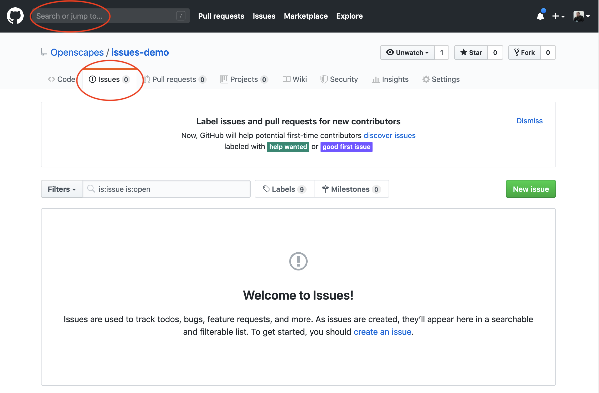
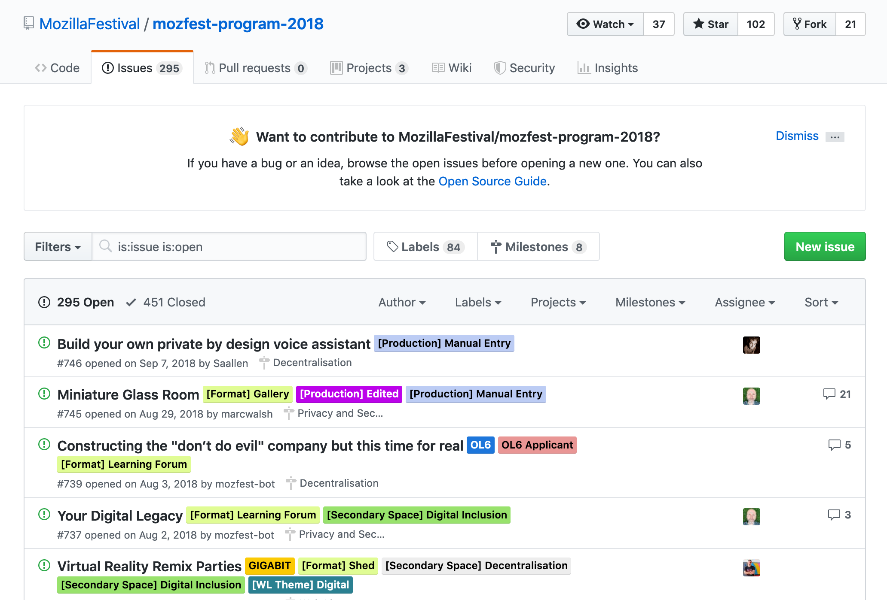

Chapter 8 GitHub for Project Management
8.1 Preamble
GitHub is best known as a collaborative coding platform. But of course productive collaboration requires communication, and GitHub has powerful features to support communication and project management through GitHub Issues. (Also see thee previous chapter about GitHub for publishing).
We are focusing on GitHub Issues here because they are a powerful way for team members to have active discussions about data and code, and therefore ways to participate in analyses even for those that are not involved in the day-to-day coding. I find Issues not only useful to discuss topics as a team, but I also treat it as my external memory: I write notes to myself, link to files and websites; I leave breadcrumbs for myself so that I am more easily able to remember my past thought processes and pick up projects where I left off.
In this way, GitHub Issues help actualize the mindset of Future You and Future Us. This means being deliberate now about communicating decisions and progress so that you or others can work in the future a little more smoothly. Using project management software is a strategy used by every software developer or people working on projects with many moving parts. It streamlines technical discussions with people who are coming/joining a group. It also helps organize and track projects that single or multiple & overlapping users can be a part of.
While there are many options for project management software out there, I like using GitHub because it’s already managing my code and my work, and linked to my collaborators so it offers a streamlined way to communicate. It’s also one less account I need to have, which is a huge bonus in my mind.
One of the reason we talk about Issues in Openscapes is because they are an excellent way to develop habits for using GitHub for your analytical project more broadly.
8.2 What are Issues?
Every GitHub repository (shortened to “repo”) has a feature called Issues. Issues is GitHub’s project management and task-tracking feature.
Issues “track ideas, enhancements, tasks, or bugs for work on GitHub.” - GitHub

Jenny Bryan has an excellent summary of Issues in her article “Excuse Me, Do You Have a Moment to Talk About Version Control?” (open-access pre-print from PeerJ, published in The American Statistican):
GitHub issues are another powerful feature of the platform. Recall that we are repur- posing Git, a tool that facilitates software development. Think of the issues for a project as its bug tracker. For projects that are not pure software development, we co-opt this machinery to organize our to-do list more generally. The basic unit is an issue and you can interact with one in two ways.
First, issues are integrated into the project’s web interface on GitHub, with a rich set of options for linking to project files and incremental changes. Second, issues and their associated comment threads appear in your email, just like regular messages (this can, of course, be configured). The result is that all correspondence about a project comes through your normal channels, but is also tracked inside the project itself, with excellent navigability and search capabilities. For software, issues are used to track bugs and feature requests. In a data analysis project, you might open an issue to flesh out a specific sub-analysis or to develop a complicated figure. In a course, we use them to manage homework submission, marking, and peer review.
Issues can be assigned to specific people and they can be labelled, e.g. “bug”, “simulation- study”, or “final-exam”. Coupled with the ability to cross-link issues and the project files or file changes, you have extraordinary power to document why things have happened in the past and to organize what needs to happen in the future.
You create an Issue for a topic, and use it track progress or ask questions. You can provide links, describe updates, link to other Issues, and you can close the Issue when it is completed. You can also re-open previously-closed Issues.
Every GitHub repository has this Issues feature. This means that sometimes Issues are public and sometimes they are private.
- In a public repo, anyone with a GitHub username can create and comment on issues.
- In a private repo, only users with permission can create and comment on issues, or see them at all
GitHub search is awesome – it will search all of your files and Issues!
8.3 Issues in the Wild
Here are some examples of “traditional” and “non-traditional” use of issues.
ggplot2’s Issues is an example of what I think is the “traditional” use of Issues, which is in a pretty pure software development context. This is a public repository, and all topics are directly related to ggplot2. Issues are largely used to report bugs, troubleshoot and sometimes to request features. Note the “Filters” feature on the top-left: this by default will search through the Issues that are still open, but you can also change this if you wanted to search also for closed Issues (just below “Filters” you can see that there are over 2000 closed Issues, documenting the innovation that’s been ongoing in ggplot2).

MozillaFestival’s Issues are an example of a less “traditional”, but increasingly common use of Issues: for project submissions, coordination, and community engagement. It is also an example of the use of labels: those colorful tags that help group and categorize the Issues. To the right of “Filters”, you’ll see a “Labels” button: clicking on this will give you a list of all the labels and how many Issues are tagged with each label.

OHI-Science’s Issues: are also an example of less “traditional” use of Issues but perhaps also somewhat common. This is a private repository, which is why there is no link to these Issues. Here, Issues are used for private conversations and archiving ideas and discussions: the OHI-Science team uses issues instead of email to have private, archived, searchable conversations about scientific methods. We are diligent about having important science conversations in these Issues, rather than those conversations being lost in emails or Slack. This is more organized and also makes onboarding team members much smoother since we do not need to forward emails to new team members.

8.4 How to use Issues
Let’s do a demo with Issues.
8.4.1 Creating a new Issue
When you click on the green “New Issue” button", you’re asked to give a Title and Leave a Comment. You can also attach files or images by dragging them into the Issue.
Then you’ll be able to Submit the Issue. On the right side, you’ll see options to Assign someone to the Issue, add a Label, add it to a Project, or add it to a Milestone. We’ll explore these features a bit more in a moment.

When you click Submit, your Issue gets a number, which is now written next to the title. This number is also part of the URL as well.
On the right of the Title, note that there is an “Edit” button if you ever need to change the title of the Issue as the conversation evolves. The Issue number will stay the same.
What happens if you want to edit the text of your Comment after you’ve Submitted it? No problem. See that once you’ve submitted an Issue, there is a blue bar at the top of the Comment, attributing your username to this comment along with the date. At the very right of this blue bar, there are 3 dots. Clicking here will give you the option to edit.
8.4.2 Commenting
The great thing about Issues is that they are for conversations with yourself and others. So once you’ve submitted an Issue, you can string together additional Comments within this comment. Maybe you asked a question, and someone else will respond with a solution or idea. They might link to an Issue with a related topic, or an external link that might be helpful.
You can also tag people in Issue Comments with the “@” symbol. As noted above, anyone who is part of the repository will automatically get email notifications when comments are submitted. But tagging specific users will also send them an email, and is a good way to bring folks into the conversation who might not already be “watching” the whole repository. In a public repository you can tag any GitHub user, and in a private repository they have to have permission.
Each time there is a comment in the Issue thread, there will be a new date marked in the blue bar at the top of the Issue. This is a nice way to see how current conversations are.
And something really great is that you can click on the date — and watch the URL change. This allows you to anchor to a specific comment within the Issue thread. This is really useful if, for example, you wanted to share a specific comment with someone else instead of having them scroll down themselves. (Note: you can also click on the three dots at the right of the blue Comment header to copy the anchored link).
8.4.3 Markdown
Issues support Markdown. This means that you can add simple formatting to your text, such as headers, bold and italics, lists, images, links, and formatted code. To help you use Markdown formatting as you learn, GitHub Issues have built-in help: there are icons between the Title and the Comment of the Issue that will do the Markdown formatting for you, and help you learn along the way.
There is also a “Preview” tab between the Title and Comment (next to the “Write” tab, where you are by default) where you can preview what your Markdown formatting looks like before you Submit the Issue. Submitting the Issue will also render the Markdown formatting.
GitHub enables you to also create Markdown check-lists by typing - [ ]. Once this is rendered, you can click it to check this box. Alternatively, in Markdown you check a box by typing - [x]. The number of checked and unchecked items will be visible in the Issue as well.
8.4.4 Linking to files
Linking to specific files or versions of files is good practice when you are discussing it in an Issue: reduce the work for the person reading the Issue (which might be Future You!). You can link to the file by opening it in the browser and copying its URL and placing it in Markdown formatting for hyperlinks: [text to hyperlink](URL).
You can also navigate to a specific version of that file, or a specific commit message, if you want to capture that file at a specific point in time.
You can also anchor to specific lines within a file, which is useful if you are requesting feedback on a specific part of an analysis or asking for help troubleshooting. I can send someone to a specific place within a file with the appropriate lines highlighted. For example [important code](https://github.com/Openscapes/issues-demo/blob/master/code-example.R#L12-L13) will render as important code.
8.4.5 Assigning, Labels
On the right side of the Issue thread, there is the “metadata” for the Issue. You can assign the Issue to a specific user, or label it with a suite of labels that you can customize (when you click on labels, see all the way at the bottom the option to edit labels. And there are other ways to navigate there as well).
If you navigate back to the full list of Issue topics (which will have the URL github.com/username-or-organization/repo-name/issues), you’ll see these metadata categories listed at the top as well, which lets you filter or view based on these categories.

8.4.6 Projects, Milestones
Projects and Milestones are further ways to organize and track progress with your Issues.
Projects are a way to organize and prioritize your issues. It uses the idea of a Kanban board, which Wikipedia says “visually depict work at various stages of a process using cards to represent work items and columns to represent each stage of the process. Cards are moved from left to right to show progress and to help coordinate teams performing the work.” The simplest have 3 columns labeled “to do”, “doing” and “done”.
You can use Projects for both Organization or personal projects. In fact, you can have multiple projects within the same repository, so different people can have different Projects organized within their shared repository, for example.
You have a lot of control over how you will manage your Projects; at this point I do not use all the features but have been playing around with using them for Openscapes planning:
Milestones are a way to attach deadlines to your Project (although you do not need to identify a date if you don’t want to). Once you create a Milestone, you can add Issues to that Milestone to help track progress. For example, maybe you have a presentation coming up and there are several Issues that need to be addressed before then.
8.5 Strategies for Issues
Every repo has Issues, but do you want to use Issues in every repo? It helps to consider the purpose for the Issues.
Using Issues for “traditional” bug/features for code, it makes sense to keep the repository public and have all Issues pertaining to that repo there within that repo.
If you’re using Issues for “non-traditional” laboratory research group and science conversations, there are other considerations. Maybe you do want a private repository, but even so you’ll want to think ahead. Will you eventually make that repo public when you publish your study? Changing a repo from private to public (or vice versa, both are possible in the repository’s Settings) will make not only the code and files of that repo public, but also all the Issues. Which is fine, but it might add considerations in terms of what is discussed in those Issues.
8.5.1 OHI example
Here is an example of the Ocean Health Index team’s thought process & strategy.
Our team works within a GitHub Organization called “OHI-Science”. Within that Organization, we work in many repositories, with different combinations of people working primarily within different repositories. Sanity-wise, we didn’t want to have conversations in Issues within each of those repositories because it would make finding those conversations more difficult (although now GitHub can search all Issues/code across an Organization!).
We also wanted our repos to be public, but to have private conversations using the Issues feature.
These two needs led us to create a single private repository named “issues”, and we only use it for Issues. This works really well for us, especially since our team lead can engage in these discussions by receiving emails about the Issues in his inbox, and can respond without having to go to GitHub.com.
8.6 Your Turn: Create & comment on issues
We will break into groups and you can explore some of these features in Issues. Here is what to do:
- Go to github.com/openscapes/demo/issues
- Create an issue, tag people in your breakout group (ask for their username)
- Browse issues, comment in other issues
- Try:
- Linking to the .md document you created in the previous chapter
- Creating a label and applying it, assigning people
- Adding Issues to a Project (create one if need be)
- Closing an Issue
Have fun! And throughout the process, talk to your breakout group, and share what you learn.
Here’s what your inbox will look like afterwards:
This is pretty rare to receive so many emails all at once. But you can always switch your setting to “Not Watch” this repository so that you only receive emails about Issues that you are tagged in.